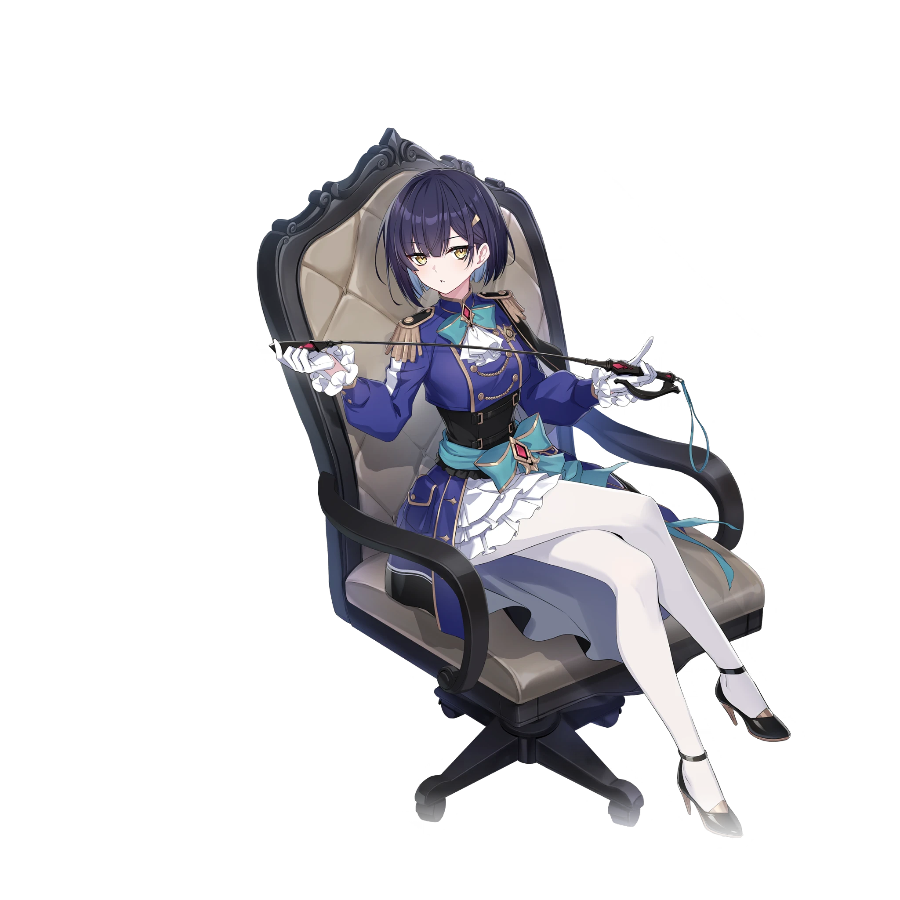
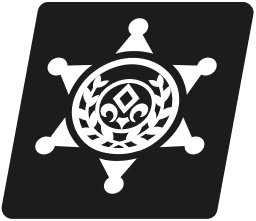
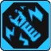
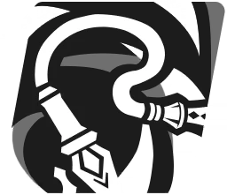
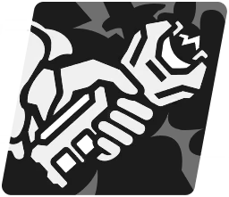
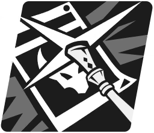
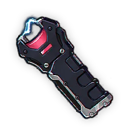

그웬
NOA의 민간 조사 업체 람파디스 수사 컨설팅의 사장 겸 조사관. 한눈에 모든 것을 간파하는 천재적인 추리를 꿈꾸지만, 정작 진가를 발휘하는 것은 끝까지 물고 늘어지는 끈기와 근성이다.
여정 시작 스테이터스 (공명 0)
30
20
20
10
10
공명 10 스테이터스
180
140
20
10
10
공명 잠재력
공격력이 일정 비율만큼 소폭 증가합니다.
최대 생명력이 일정 비율만큼 소폭 증가합니다.
공격력이 2% 증가합니다.
일러스트


그웬의 공격력이 15% 증가합니다. 그웬이 최초 전투 시작 시 자신에게 1턴 간 현장 대기를 발생시킵니다. 자신을 제외한 아군이 타격 시 자신이 현장 대기 상태이면 자신에게 전기 충격(해제불가)을 1회 발생시키고 자신을 제외한 아군이 특수기 타격 시 자신이 현장 대기 상태이면 전기 충격(해제불가)을 추가로 1회 발생시킵니다. 아군이 타격 후 자신의 전기 충격(해제불가) 중첩 횟수가 5회 이상이면 적에게 진실을 밝히는 빛!을 발동하고 전기 충격(해제불가)을 5회 감소시킵니다. 추가 발동 효과는 자신이 가장 최근에 타격한 적을 우선 공격합니다. 자신을 제외한 아군 혹은 적이 턴 시작 시 자신이 현장 대기 상태가 아니라면 자신의 도약 스택에 비례하여 행동 게이지를 4%씩 증가시킵니다.
다른 아군이 있을 경우 공격 대상으로 선택될 수 없습니다. 피격 시 해제되지 않으며 은신과 관련된 효과에 영향을 받습니다. 은신의 선제 방어 발생 무시 효과는 적용되지 않습니다.

휴대용 진실 유도기의 전압을 높입니다. 최대 10회 중첩됩니다.
스킬 레벨 정보

단단한 가죽 채찍으로 진실을 숨기고 있는 적을 공격합니다. 자신에게 도약 스택을 1개 부여합니다.

달 속성 유닛에게 주는 피해량이 1% 증가합니다. 최대 5스택까지 적용됩니다. 부스트 효과는 강화/약화 효과와 무관하게 독립적으로 적용됩니다.
스킬 레벨 정보

휴대용 진실 유도기를 사용해 용의자로 특정된 적을 공격합니다. 자신의 행동 게이지를 10% 증가시킵니다. 해당 스킬이 추가로 발동되었다면 타격 시 자신의 피해량이 10% 증가합니다.
노바 버스트 타격 시 일시적으로 자신의 강인도 고정 피해가 1 증가하고 자신에게 전기 충격(해제불가)을 추가로 2회 발생시킵니다.
휴대용 진실 유도기의 전압을 높입니다. 최대 10회 중첩됩니다.
스킬 레벨 정보

추리를 성공한 그웬이 가장 유력한 용의자로 특정된 적을 채찍 끝으로 공격합니다. 타격 시 자신에게 전기 충격(해제불가)을 2회 발생시킵니다. 타격 후 자신에게 3턴 간 현장 대기를 발생시키고 적에게 진실을 밝히는 빛!을 발동합니다.
노바 버스트 타격 시 일시적으로 자신의 강인도 고정 피해가 1 증가합니다.
휴대용 진실 유도기의 전압을 높입니다. 최대 10회 중첩됩니다.
다른 아군이 있을 경우 공격 대상으로 선택될 수 없습니다. 피격 시 해제되지 않으며 은신과 관련된 효과에 영향을 받습니다. 은신의 선제 방어 발생 무시 효과는 적용되지 않습니다.
스킬 레벨 정보

전용 부적
휴대용 진실 유도기
그웬이 휴대하고 다니는 전기 충격기. 기기 끝에서 번쩍이는 섬광이 터져 나오면, 누구라도 진실을 말하지 않고는 버티지 못할 것이다.
타격 시 자신에게 전기 충격(해제불가)을 1회 발생시킵니다. 진실을 밝히는 빛!을 추가로 발동 시 범인은 바로 너!의 쿨타임이 1턴 감소합니다. 쿨타임 감소 효과는 1턴에 1번만 발생합니다.